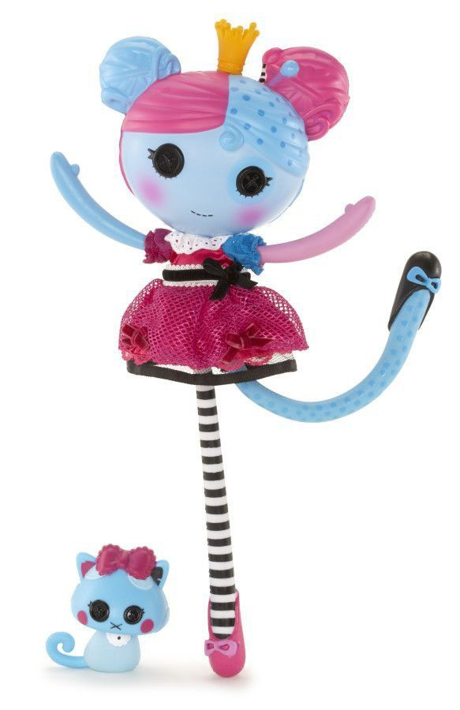
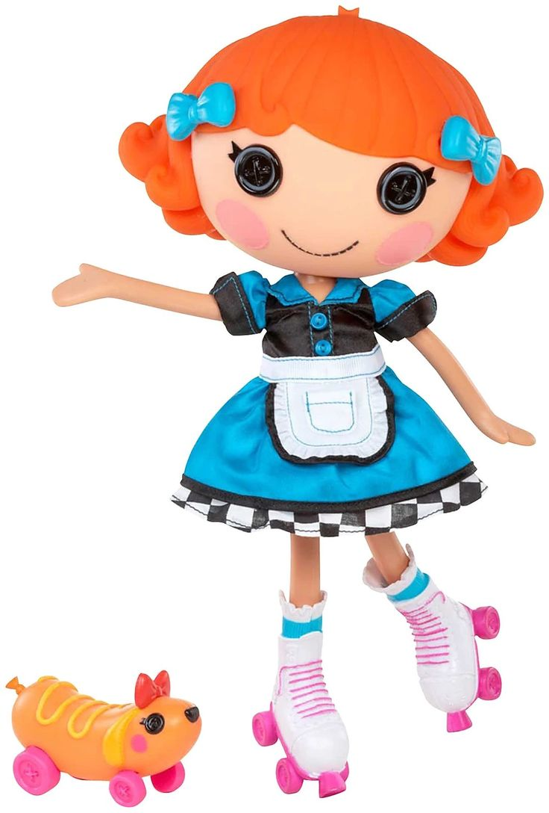
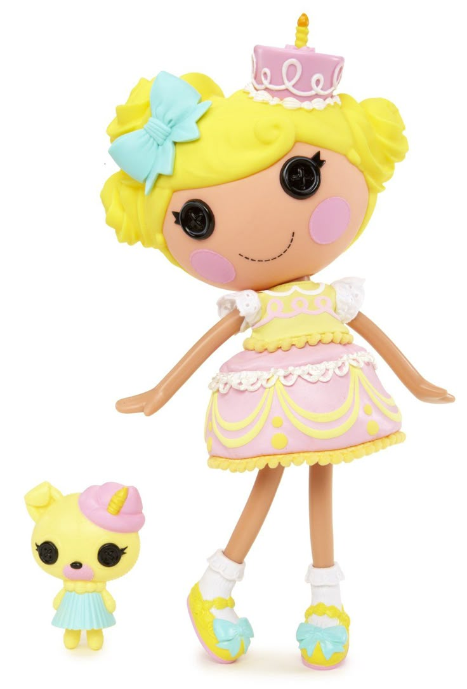
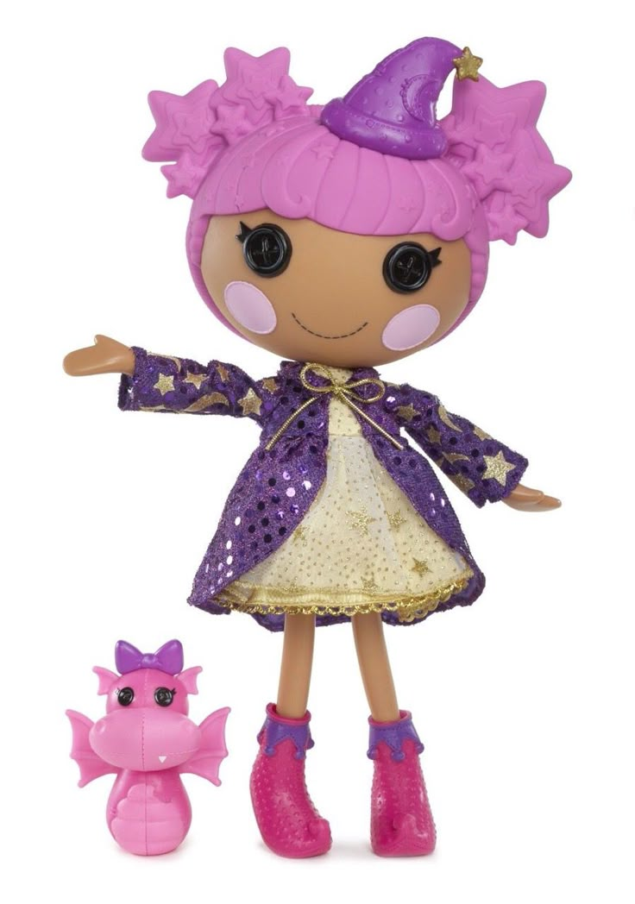
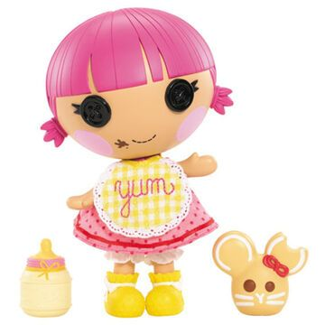
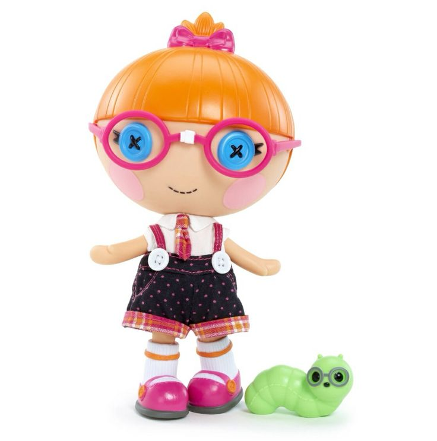
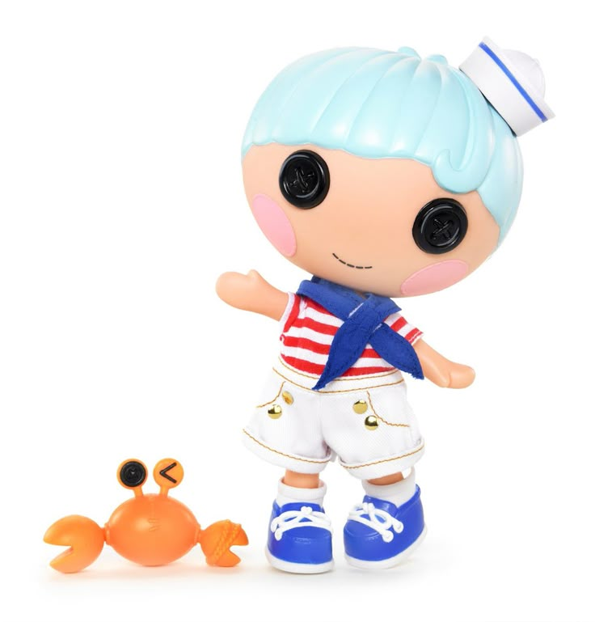

Princess Anise

Princess Anise is the Princess of
Knick-knacks.
She is a girly-girl who rules over the kingdom
of all things precious and pretty. She loves
sharing stories about her endless collection of
keepsakes, but throwing tea parties is what she
loves best of all! Her name comes from anise, a
herb used to make medicine.
You may be curious about:





